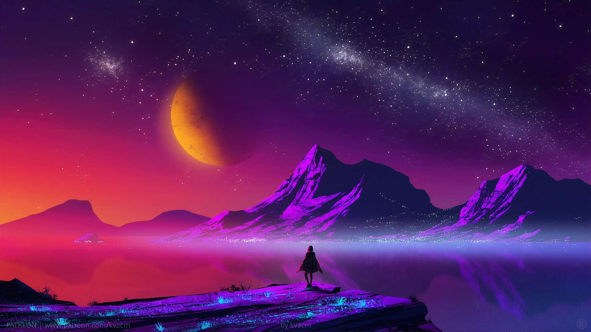

Krygonus is the most colorfully vivid planet you have encountered thus far on your quest. You are completely distracted by the visuals all around you and you take some time to soak it all in. You have read about the citizens here and have heard lots of great things.

You follow the map's directions for hours until you reach a skyscraper in the heart of a bustling but beautiful city. The map tells you to go to a restaurant called Big Ballers Only and speak with the owner. You feel proud thinking that Wild Wallace is looking down at you from somewhere up there, believing you're a big baller.
You speak with the manager and tell him your story. Unsurprisingly, this owner, whose nametag says Chef Rordon Gamsey, turned out to be a good friend of Wallace. He tells you about how Wallace befriended him and helped him get back on his feet after years of living on the street. Wallace gave him all the funding he needed to start the restaurant (with money stolen from the Plutonian Gas Giant Company). The restaurant has become highly successful and Gamsey feels forever indebted to Wallace, who refused to be paid back.
After wiping his tears away, Gamsey gives you a riddle. Depending on your answer, he will give you a different navigator that will guide your spaceship to a wormhole. He asks you, "What solid object becomes more wet as you become more dry?"